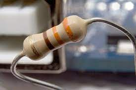
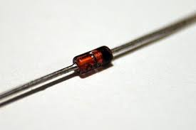

Ohm kanununa göre uçları arasında gerilim düşümüne sebep olan devre elemanıdır.
Elektronik Devre Elemanları
Direnç
Diyot
Diyot, yalnızca bir yönde akım geçiren devre elemanıdır. Bir yöndeki dirençleri ihmal edilebilecek kadar küçük, öbür yöndeki dirençleri ise çok büyük olan elemanlardır.
Transformatör
Transformatör ya da kısa adıyla trafo iki veya daha fazla elektrik devresini elektromanyetik indüksiyonla birbirine bağlayan bir elektrik aletidir.
Bir elektrik devresinden diğer elektrik devresine, enerjiyi elektromanyetik alan aracılığıyla nakletmektedir.